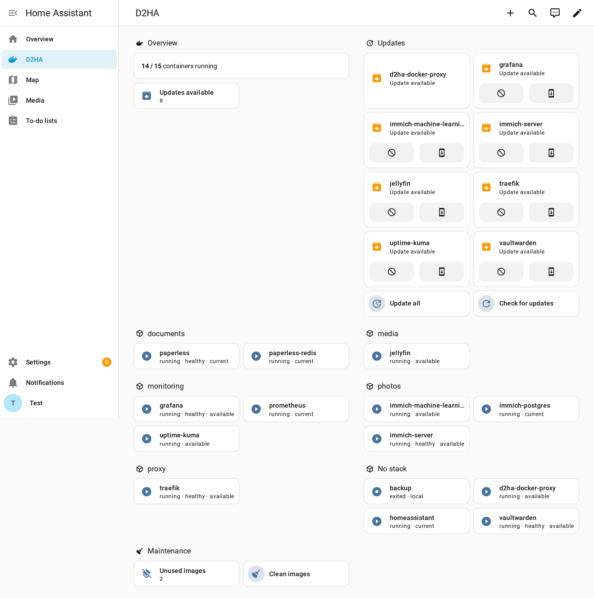
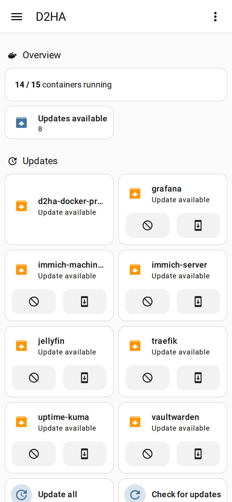

Dashboard
The integration ships a dashboard that builds itself from your D2HA entities: nothing to configure and nothing else to install.
Create it
- In Home Assistant, open Settings → Dashboards and press Add dashboard.
- Choose D2HA in the list.
- Give it a name and an icon, then Create. It appears in the sidebar.
What it shows
| Section | Contents |
|---|---|
| Overview | Containers running out of the total, and updates available |
| Updates | A tile for every pending update, with release notes and install, then Check for updates and Update all. “Everything is up to date.” when there is nothing. |
| One section per stack | A tile for each container with its state, health and update; containers without a stack last |
| Maintenance | The unused images counter and Clean images |
Update all and Clean images ask for a confirmation first, so a stray tap does nothing. When D2HA is down, the overview says “D2HA is not reachable.”

How it behaves
- It is rebuilt from the live entities every time it opens: new containers, hidden ones and new stacks need no edit.
- It uses built-in cards only, in English or Italian like your Home Assistant.
- With more than one D2HA server, it has one view each.

Change it
To edit it by hand, open the dashboard, then the menu → Edit dashboard → Take control. Home Assistant turns it into a normal dashboard that you can change, but it stops following your containers by itself.
Something wrong or missing on this page? Open an issue.